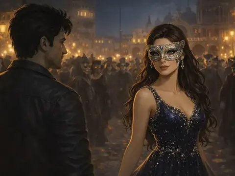
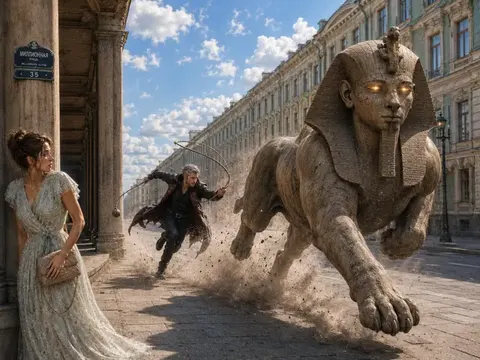
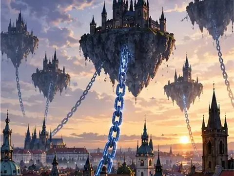

Elegí un mundo y entrá: los lugares de las novelas, en qué capítulo aparece cada uno y lo que dicen de ellos los personajes.

VeneciaMaschera di VeneziaMáscaras, canales y una cripta bajo la lagunaMadridLa hora salvaje: CarnavalEl carnaval en que despertaron los dragones
San PetersburgoResonancia del amorEsfinges, puentes levadizos e islas en el cieloBelgradoLa hora salvajeDos ríos, una fortaleza y una hora salvaje
PragaOstrovy nad Prahou, Podzemní tajemstvíIslas suspendidas sobre Praga con cadenas de luzAtlántidaNovela estelar (Звёздный роман)Dos mundos y una ciudad bajo el océanoCiudad SecretaLa ciudad secretaUna ciudad blanca escondida dentro de las montañasFiordoAmor del Norte 3: Viento del esteEl palacio de hielo, los unicornios y la muralla del NorteMetro fantasmaEl tren fantasma (ru.)Los vagones del tren que no figura en ningún horarioCargando…